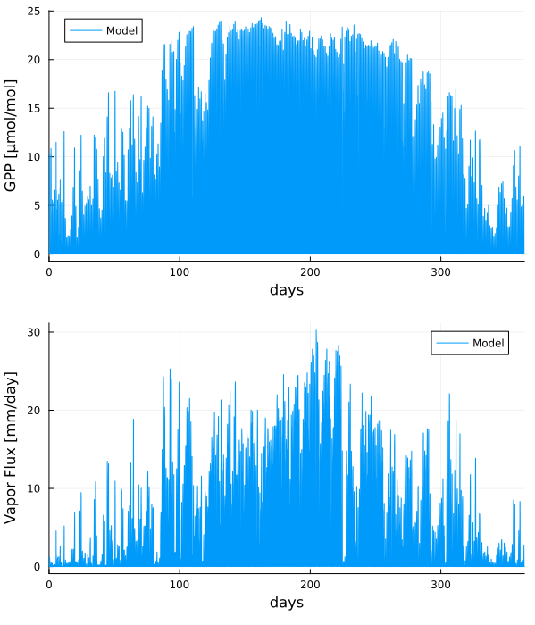

Introduction to the Canopy Model
This tutorial shows how to instantiate and run a simulation of the canopy biophysics model in ClimaLand. A CanopyModel including all component models is initialized, then an example simulation is run. The initial conditions, atmospheric and radiative flux conditions, and canopy properties are set up to match those observed at the US-MOz flux tower, a flux tower located within an oak-hickory forest in Ozark, Missouri, USA. See Wang et al. 2021 for details on the site and canopy parameters.
The canopy biophysics model in ClimaLand combines a photosynthesis model with a canopy radiative transfer scheme, plant hydraulics model, and stomatal conductance model, placing them under either prescribed or simulated (as in a full Earth System Model) atmospheric and radiative flux conditions.
ClimaLand supports either Beer-Lambert law or a Two-Stream model for radiative transfer. For this tutorial, we will use the Beer-Lambert law, in which the intensity of light absorbed is a negative exponential function of depth in the canopy and an exinction coefficient determined by optical depth.
The model of photosynthesis in Clima Land is the Farquar Model in which GPP is calculated based on C3 and C4 photosynthesis, which determines potential leaf-level photosynthesis.
The plant hydraulics model in ClimaLand solves for the water content within bulk root-stem-canopy system using Richards equation discretized into an arbitrary number of layers. The water content is related to the water potential using a retention curve relationship, and the water potential is used to simulate the effect moisture stress has on transpiration and GPP.
Preliminary Setup
Load External Packages:
import SciMLBase
using Plots
using Statistics
using Dates
using InsolationLoad CliMA Packages and ClimaLand Modules:
using ClimaCore
import ClimaParams as CP
import ClimaTimeSteppers as CTS
using StaticArrays
using ClimaLand
using ClimaLand.Domains: Point
using ClimaLand.Canopy
using ClimaLand.Canopy.PlantHydraulics
import ClimaLand
import ClimaLand.Parameters as LPDefine the floating point precision desired (64 or 32 bit), and get the parameter set holding constants used across CliMA Models:
const FT = Float32;
earth_param_set = LP.LandParameters(FT);Setup the Canopy Model
We want to simulate a vegetative canopy in standalone mode, without coupling the canopy to atmospheric or soil physics models, so we choose a CanopyModel. From the linked documentation, we can see that we need to provide shared parameters, a domain, a radiative transfer model, photosynthesis model, plant hydraulics model, stomatal conductance model, and atmospheric and radiative flux conditions which may be either prescribed or simulated.
First, define the parameters of the model domain. These values are needed by some of the component models. Here we are performing a 1-dimensional simulation in a Point domain and will use single stem and leaf compartments, but for 2D simulations, the parameters of the domain would change.
nelements = 10
zmin = FT(-2)
zmax = FT(0)
f_root_to_shoot = FT(3.5)
SAI = FT(0.00242)
maxLAI = FT(4.2)
plant_ν = FT(2.46e-4) # kg/m^2
n_stem = Int64(1)
n_leaf = Int64(1)
h_stem = FT(9)
h_leaf = FT(9.5)
compartment_midpoints = [h_stem / 2, h_stem + h_leaf / 2]
compartment_surfaces = [zmax, h_stem, h_stem + h_leaf]
land_domain = Point(; z_sfc = FT(0.0))ClimaLand.Domains.Point{Float32}(0.0f0, (surface = ClimaCore.Spaces.PointSpace{ClimaComms.SingletonCommsContext{ClimaComms.CPUSingleThreaded}, ClimaCore.DataLayouts.DataF{ClimaCore.Geometry.LocalGeometry{(3,), ClimaCore.Geometry.ZPoint{Float32}, Float32, StaticArraysCore.SMatrix{1, 1, Float32, 1}}, Vector{Float32}}}(ClimaComms.SingletonCommsContext{ClimaComms.CPUSingleThreaded}(ClimaComms.CPUSingleThreaded()), ClimaCore.DataLayouts.DataF{ClimaCore.Geometry.LocalGeometry{(3,), ClimaCore.Geometry.ZPoint{Float32}, Float32, StaticArraysCore.SMatrix{1, 1, Float32, 1}}, Vector{Float32}}
Float32[0.0, 1.0, 1.0, 1.0, 1.0, 1.0, 1.0, 1.0]),))- We will be using prescribed atmospheric and radiative drivers from the US-MOz tower, which we read in here. We are using prescribed atmospheric and radiative flux conditions, but it is also possible to couple the simulation with atmospheric and radiative flux models. We also
read in the observed LAI and let that vary in time in a prescribed manner.
Use the data tools for reading FLUXNET data sets
include(
joinpath(pkgdir(ClimaLand), "experiments/integrated/fluxnet/data_tools.jl"),
);First provide some information about the site Timezone (offset from UTC in hrs)
time_offset = 77Site latitude and longitude
lat = FT(38.7441) # degree
long = FT(-92.2000) # degree-92.2f0Height of the sensor at the site
atmos_h = FT(32)32.0f0Provide the site site ID and the path to the data file:
site_ID = "US-MOz"
data_link = "https://caltech.box.com/shared/static/7r0ci9pacsnwyo0o9c25mhhcjhsu6d72.csv"
include(
joinpath(
pkgdir(ClimaLand),
"experiments/integrated/fluxnet/met_drivers_FLUXNET.jl",
),
);[ Info: Warning: Data for TA_F 0.719% poor quality. Returning with no replacement.
[ Info: Warning: Data for VPD_F 0.719% poor quality. Returning with no replacement.
[ Info: Warning: Data for PA_F 0.00571% poor quality. Filled with mean value using QC flag
[ Info: Warning: Data for P_F 0.0% poor quality. Filled with mean value using QC flag
[ Info: Warning: Data for WS_F 0.00571% poor quality. Filled with mean value using QC flag
[ Info: Warning: Data for LW_IN_F 0.0% poor quality. Filled with mean value using QC flag
[ Info: Warning: Data for SW_IN_F 0.0114% poor quality. Filled with mean value using QC flag
[ Info: Warning: Data for G_F_MDS 0.00571% poor quality. Filled with mean value using QC flag
[ Info: Information: Data for GPP_DT_VUT_REF is complete and no QC flag present
[ Info: Information: Data for LE_CORR is complete and no QC flag present
[ Info: Information: Data for H_CORR is complete and no QC flag present
[ Info: Warning: Data for LW_OUT 0.00571% has value of -9999. Filled with mean value
[ Info: Warning: Data for SW_OUT 0.131% has value of -9999. Filled with mean value
[ Info: Warning: Data for SWC_F_MDS_1 0.0571% poor quality. Filled with mean value using QC flag
[ Info: Warning: Data for TS_F_MDS_1 0.0% poor quality. Filled with mean value using QC flag
[ Info: Warning: Data for CO2_F_MDS 0.0457% poor quality. Filled with mean value using QC flag
Populate the SharedCanopyParameters struct, which holds the parameters shared between all different components of the canopy model.
z0_m = FT(2)
z0_b = FT(0.2)
shared_params = SharedCanopyParameters{FT, typeof(earth_param_set)}(
z0_m,
z0_b,
earth_param_set,
);For this canopy, we are running in standalone mode, which means we need to use a prescribed soil driver, defined as follows:
ψ_soil0 = FT(0.0)
soil_driver = PrescribedSoil(
FT;
root_depths = SVector{10, FT}(-(10:-1:1.0) ./ 10.0 * 2.0 .+ 0.2 / 2.0),
ψ = t -> ψ_soil0,
α_PAR = FT(0.2),
α_NIR = FT(0.4),
T = t -> 298.0,
ϵ = FT(0.99),
);Now, setup the canopy model by component. Provide arguments to each component, beginning with radiative transfer:
rt_params = TwoStreamParameters(
FT;
G_Function = ConstantGFunction(FT(0.5)),
α_PAR_leaf = FT(0.1),
α_NIR_leaf = FT(0.45),
τ_PAR_leaf = FT(0.05),
τ_NIR_leaf = FT(0.25),
Ω = FT(0.69),
λ_γ_PAR = FT(5e-7),
λ_γ_NIR = FT(1.65e-6),
)
rt_model = TwoStreamModel{FT}(rt_params);Arguments for conductance model:
cond_params = MedlynConductanceParameters(FT; g1 = FT(141.0))
stomatal_model = MedlynConductanceModel{FT}(cond_params);Arguments for photosynthesis model:
is_c3 = FT(1) # set the photosynthesis mechanism to C3
photo_params = FarquharParameters(FT, is_c3; Vcmax25 = FT(5e-5))
photosynthesis_model = FarquharModel{FT}(photo_params);Arguments for autotrophic respiration model:
AR_params = AutotrophicRespirationParameters(FT)
AR_model = AutotrophicRespirationModel{FT}(AR_params);Arguments for plant hydraulics model are more complicated.
Begin by providing general plant parameters. For the area indices of the canopy, we choose a PrescribedSiteAreaIndex, which supports LAI as a function of time, with RAI and SAI as constant.
LAI = 4.2
LAIfunction = (t) -> LAI
SAI = FT(0.00242)
f_root_to_shoot = FT(3.5)
RAI = FT((SAI + LAI) * f_root_to_shoot)
ai_parameterization =
PrescribedSiteAreaIndex{FT}(TimeVaryingInput(LAIfunction), SAI, RAI)
rooting_depth = FT(1.0);Create the component conductivity and retention models of the hydraulics model. In ClimaLand, a Weibull parameterization is used for the conductivity as a function of potential, and a linear retention curve is used.
K_sat_plant = FT(1.8e-8)
ψ63 = FT(-4 / 0.0098)
Weibull_param = FT(4)
a = FT(0.05 * 0.0098)
conductivity_model =
PlantHydraulics.Weibull{FT}(K_sat_plant, ψ63, Weibull_param)
retention_model = PlantHydraulics.LinearRetentionCurve{FT}(a);Use these values to populate the parameters of the PlantHydraulics model:
ν = FT(0.7)
S_s = FT(1e-2 * 0.0098)
plant_hydraulics_ps = PlantHydraulics.PlantHydraulicsParameters(;
ai_parameterization = ai_parameterization,
ν = ν,
S_s = S_s,
rooting_depth = rooting_depth,
conductivity_model = conductivity_model,
retention_model = retention_model,
);Define the remaining variables required for the plant hydraulics model.
plant_hydraulics = PlantHydraulics.PlantHydraulicsModel{FT}(;
parameters = plant_hydraulics_ps,
n_stem = n_stem,
n_leaf = n_leaf,
compartment_surfaces = compartment_surfaces,
compartment_midpoints = compartment_midpoints,
);Now, instantiate the canopy model, using the atmospheric and radiative drivers included from the external file, as well as the soil driver we instantiated above. This contains every piece of information needed to generate the set of ODEs modeling the canopy biophysics, ready to be passed off to a timestepper.
canopy = ClimaLand.Canopy.CanopyModel{FT}(;
parameters = shared_params,
domain = land_domain,
autotrophic_respiration = AR_model,
radiative_transfer = rt_model,
photosynthesis = photosynthesis_model,
conductance = stomatal_model,
hydraulics = plant_hydraulics,
soil_driver = soil_driver,
atmos = atmos,
radiation = radiation,
);[ Info: Using the PrescribedAtmosphere air temperature as the canopy temperature
Initialize the state vectors and obtain the model coordinates, then get the explicit time stepping tendency that updates auxiliary and prognostic variables that are stepped explicitly.
Y, p, coords = ClimaLand.initialize(canopy)
exp_tendency! = make_exp_tendency(canopy);Provide initial conditions for the canopy hydraulics model
ψ_stem_0 = FT(-1e5 / 9800)
ψ_leaf_0 = FT(-2e5 / 9800)
S_l_ini =
inverse_water_retention_curve.(
retention_model,
[ψ_stem_0, ψ_leaf_0],
ν,
S_s,
)
for i in 1:2
Y.canopy.hydraulics.ϑ_l.:($i) .= augmented_liquid_fraction.(ν, S_l_ini[i])
end;Select a time range to perform time stepping over, and a dt. Also create the saveat Array to contain the data from the model at each time step. As usual, the timestep depends on the problem you are solving, the accuracy of the solution required, and the timestepping algorithm you are using.
t0 = 0.0
N_days = 364
tf = t0 + 3600 * 24 * N_days
dt = 225.0;Initialize the cache variables for the canopy using the initial conditions and initial time.
set_initial_cache! = make_set_initial_cache(canopy)
set_initial_cache!(p, Y, t0);Allocate the struct which stores the saved auxiliary state and create the callback which saves it at each element in saveat.
n = 16
saveat = Array(t0:(n * dt):tf)
sv = (;
t = Array{Float64}(undef, length(saveat)),
saveval = Array{NamedTuple}(undef, length(saveat)),
)
saving_cb = ClimaLand.NonInterpSavingCallback(sv, saveat);Create the callback function which updates the forcing variables, or drivers.
updateat = Array(t0:1800:tf)
model_drivers = ClimaLand.get_drivers(canopy)
updatefunc = ClimaLand.make_update_drivers(model_drivers)
driver_cb = ClimaLand.DriverUpdateCallback(updateat, updatefunc)
cb = SciMLBase.CallbackSet(driver_cb, saving_cb);Select a timestepping algorithm and setup the ODE problem.
timestepper = CTS.RK4();
ode_algo = CTS.ExplicitAlgorithm(timestepper)
prob = SciMLBase.ODEProblem(
CTS.ClimaODEFunction(T_exp! = exp_tendency!, dss! = ClimaLand.dss!),
Y,
(t0, tf),
p,
);Now, we can solve the problem and store the model data in the saveat array, using SciMLBase.jl and ClimaTimeSteppers.jl.
sol = SciMLBase.solve(prob, ode_algo; dt = dt, callback = cb, saveat = saveat);Create some plots
We can now plot the data produced in the simulation. For example, GPP:
daily = sol.t ./ 3600 ./ 24
model_GPP = [
parent(sv.saveval[k].canopy.photosynthesis.GPP)[1] for
k in 1:length(sv.saveval)
]
plt1 = Plots.plot(size = (600, 700));
Plots.plot!(
plt1,
daily,
model_GPP .* 1e6,
label = "Model",
xlim = [minimum(daily), maximum(daily)],
xlabel = "days",
ylabel = "GPP [μmol/mol]",
);Transpiration plot:
T = [
parent(sv.saveval[k].canopy.conductance.transpiration)[1] for
k in 1:length(sv.saveval)
]
T = T .* (1e3 * 24 * 3600)
plt2 = Plots.plot(size = (500, 700));
Plots.plot!(
plt2,
daily,
T,
label = "Model",
xlim = [minimum(daily), maximum(daily)],
xlabel = "days",
ylabel = "Vapor Flux [mm/day]",
);Show the two plots together:
Plots.plot(plt1, plt2, layout = (2, 1));Save the output:
savefig("ozark_standalone_canopy_test.png");
This page was generated using Literate.jl.